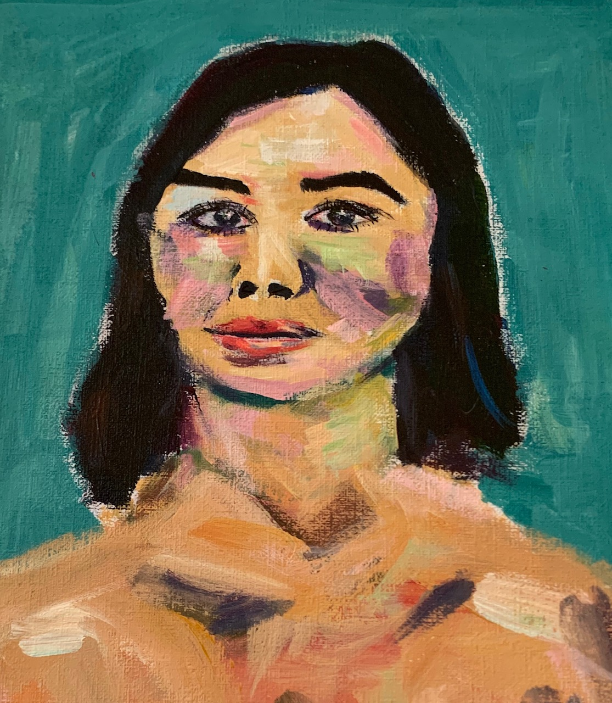

Ravital Solomon
I'm a cryptographer and the co-founder of Sunscreen.
Sunscreen is a result of my time at NuCypher, where I worked as a cryptographer researching privacy-preserving smart contracts. Prior to that, I was part of the 11th London cohort of Entrepreneur First.
I completed my Master's at Oxford in math where I wrote my dissertation on lattice-based group signatures, focusing on their application to constructing an anonymous reputation system.
My undergrad was in pure math at Berkeley, where I was fortunate enough to be introduced to lattice-based cryptography by Ken Ribet.
I'm also very interested in education. I currently volunteer as both a mentor and part of the alumni engagement team at Minds Matter SF. During my time at Berkeley, I was a math tutor at the Student Learning Center (SLC).
Artwork done by my good friend—Helen Hu.